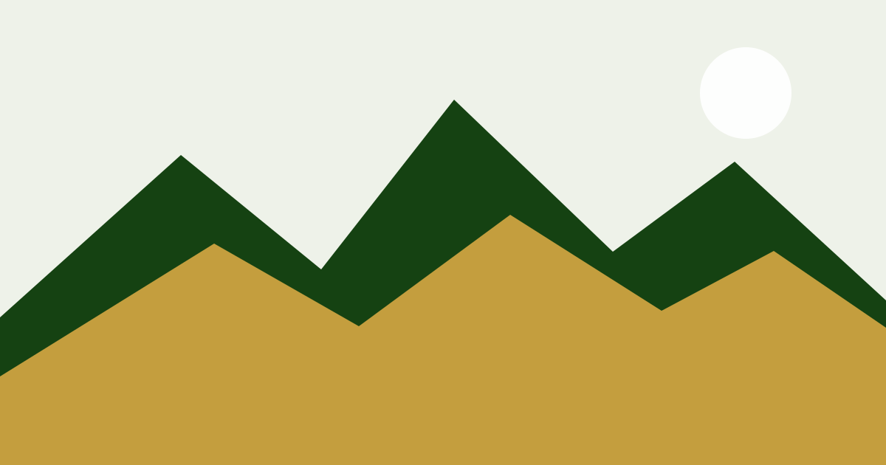

Module 1
Start here
Introduce the essential question, required resources, and the first learner action.
Open moduleEnglish 30
Plan, draft, revise, and preserve your writing in one workspace.

Replace this paragraph with the course purpose, learner audience, and what successful completion looks like.
Module 1
Introduce the essential question, required resources, and the first learner action.
Open moduleIdentify one idea learners should explain before they move to the next module.
Outcomes: Author: map the exact Alberta outcome before release.
Author: replace this context slot with a self-teaching explanation or task.
Next stepAuthor: replace this explanation slot with a self-teaching explanation or task.
Next stepAuthor: replace this worked slot with a self-teaching explanation or task.
Next stepAuthor: replace this guided slot with a self-teaching explanation or task.
Purpose: Author: explain why this task matters.
Instructions: Author: state the steps, expected evidence and feedback.
Next stepAuthor: replace this independent-check slot with a self-teaching explanation or task.
Purpose: Author: explain why this task matters.
Instructions: Author: state the steps, expected evidence and feedback.
Author: add curriculum/source identity and location.
Teacher exemplar: compare Biology30 chapters 12/13; select subject-appropriate tools.